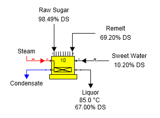
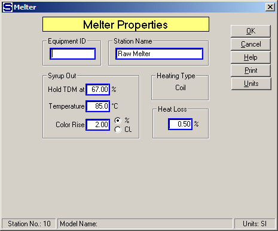
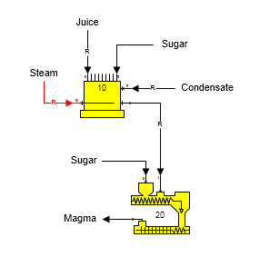

Output Temperature and %DS The output flow from the melter can be controlled to a temperature and % dry substance. The figure below shows a melter with the output liquor flow held to 85°C and 67% DS. The raw sugar and remelt into the melter are combined and then sweet water is used to control the liquor out to 67% DS. The sweet water is a required flow and its quantity is calculated by Sugars ('R' on sweet water flow line).

The Melter Properties window is shown below to illustrate the data that is entered to give the desired liquor output flow characteristics for the single station model shown in the figure above. The sweet water into the melter must originate from either an external flow or a distributor station so that its quantity can be adjusted by Sugars to give the specified output flow % DS (entered as "Hold TDM at 67.00 %"). Also, the steam flow must originate from either an external flow or a distributor station so that its quantity can be calculated by Sugars to provide the necessary steam to give the specified output temperature.

Output Flow Required The figure below shows a melter station with its process flow out required (flow stream going from station 10 to station 20). Condensate flows into port 9 and it is required because the condensate is used to control the total dry matter (TDM) of the output flow. Steam is used to heat the melter and it is a required flow.

The Melter Properties window is shown below. Because the output flow from the melter is required, one of the input flows into either port 0 or port 8 is required. There are two input flows that can be selected to be required and these two flows are shown in the Required Flow box on the window below. Either one of the input flows can be selected to satisfy the required output flow. The input flow to port 9 is not listed as one of the input flows that can be selected because it is used to control the TDM out of the melter. A total of three input flows are required (i.e., steam, juice and condensate) and Sugars will adjust the quantities of these three flows during a balance.